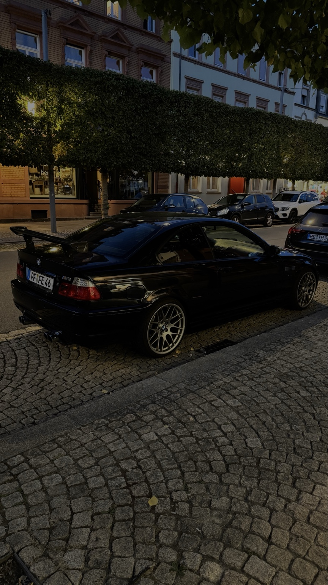
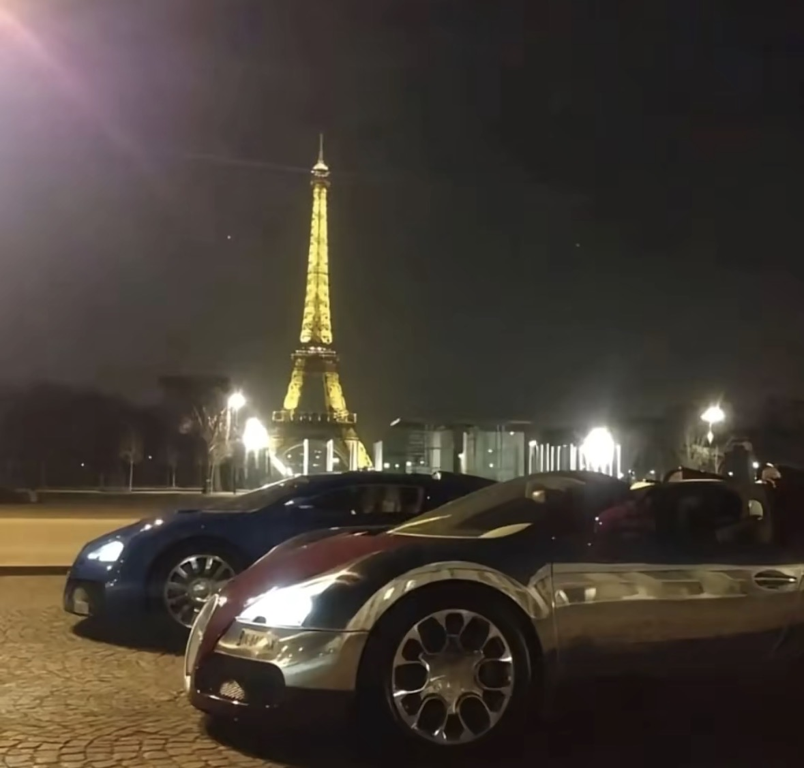
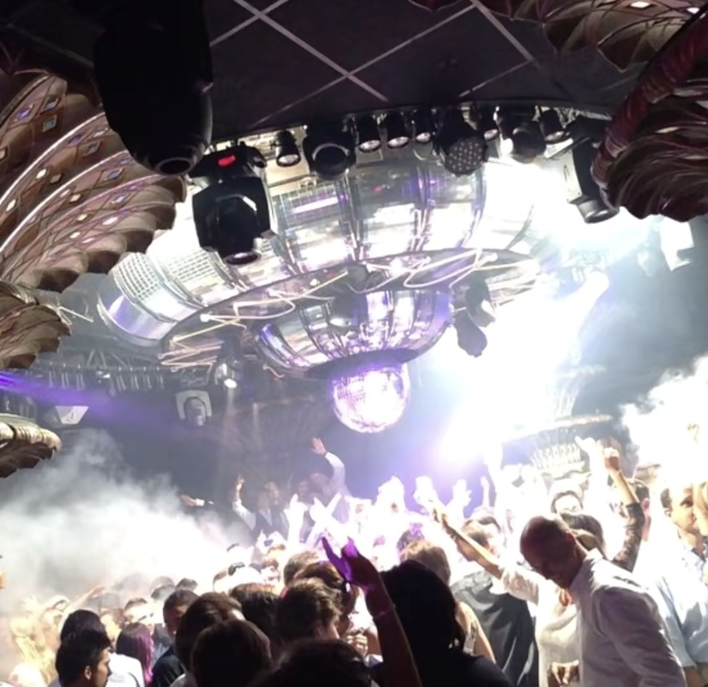
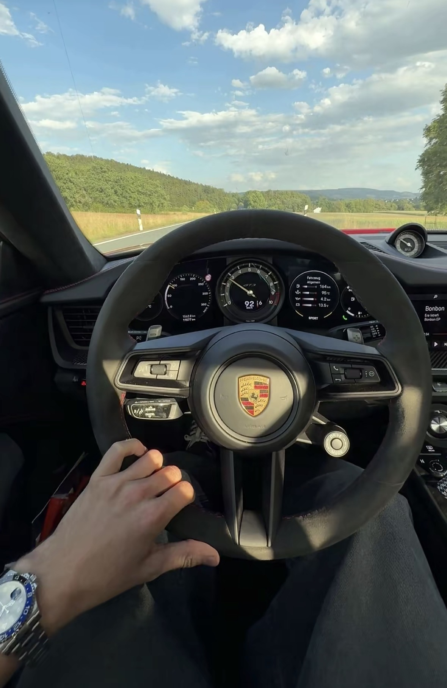

A STORY IN PROGRESS
Mein
krummer
Weg.
Same dreams
Different route.
Different route.
Still figuring
it out.
it out.

A STORY IN PROGRESS
Vielleicht suche ich gar nicht nach dem richtigen Weg. Vielleicht will ich nur einen, der sich nach meinem anfühlt.
ENTER ↓Man macht Schule fertig. Man sucht sich etwas. Man arbeitet. Man verdient Geld. Und irgendwann soll man angeblich wissen, wer man ist.
Bei mir war es eher andersrum. Je mehr ich ausprobiert habe, desto mehr Fragen hatte ich.
„Will ich das wirklich — oder bin ich nur gut darin?“
 002
002
Ich fahre manchmal einfach, um kurz nirgendwo sein zu müssen.
somehow it all belongs together


Vielleicht muss nicht alles, was du liebst, irgendwann dein Beruf werden.

that's the whole point.
Zum ersten Mal hatte ich das Gefühl, etwas gefunden zu haben, das nur mir gehört.
Kein Lehrer. Kein Chef. Kein vorgegebener Weg. Nur Entscheidungen und ihre Konsequenzen.
Geld kann dir für einen Moment das Gefühl geben, du hättest alles verstanden.
Bis du merkst, dass Gewinnen und Ankommen zwei völlig verschiedene Dinge sind.


Ich weiß nicht, wo ich in fünf Jahren bin. Früher hätte mich genau das verrückt gemacht.
Heute glaube ich, dass darin vielleicht die Freiheit liegt.
proof that I was here.



Orte, die ich sehen will.
Autos, die mich faszinieren.
Menschen, die bleiben.
Ideen, die ich ausprobieren muss.
same person.
different versions.
Nicht darüber, wie man mit 19 erfolgreich wird. Nicht darüber, wie man alles richtig macht.
Sondern darüber, wie es sich anfühlt, viel vom Leben zu wollen und gleichzeitig noch keine Ahnung zu haben, wo man eigentlich hingehört.
not a success story.
just a real one.
maybe we're all just figuring it out.
Und vielleicht reicht das fürs Erste.
A. MOURAD — 2026